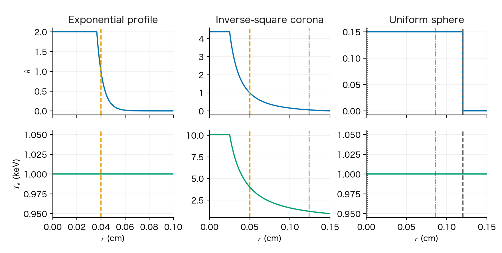
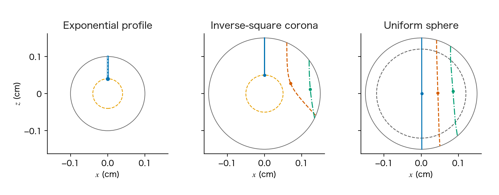
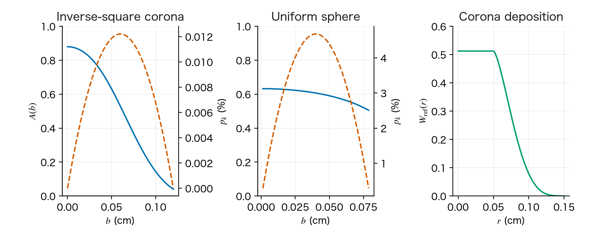
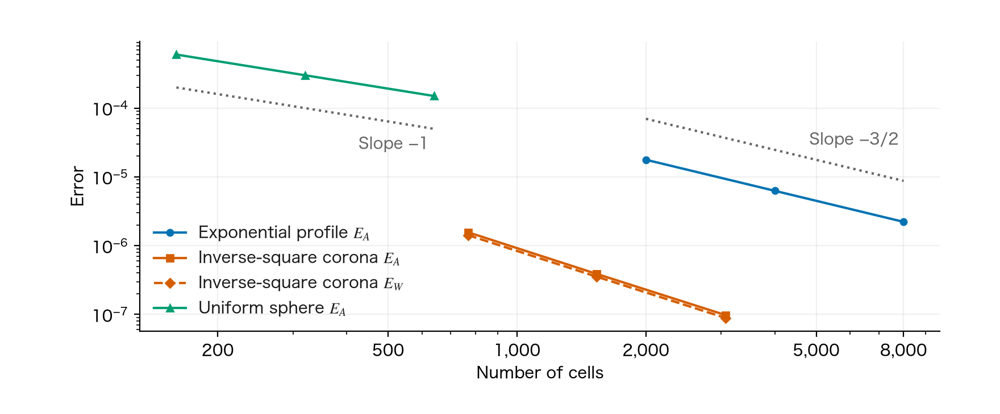

Laser ray-trace verification against analytic solutions reference
Abstract
Three spherical problems verify one-dimensional laser ray tracing with inverse-bremsstrahlung absorption. The tests compare the fraction of beam energy absorbed with analytic solutions for an exponential density profile, an inverse-square corona, and a uniform sub-critical sphere. The corona test also compares the radial distribution of deposited energy. All four convergence comparisons pass. The observed orders are about 1.5 for the exponential profile, 2 for the corona, and 1 for the sphere.
Introduction
The characteristic ray integrator follows rays through a spherical plasma and accumulates collisional absorption along their paths. The exponential profile isolates absorption near a critical turning point. The corona samples turning points at different radii. In the sphere, refraction at a density step changes the length of the absorbing chord.
The analytic comparisons draw on the absorption integral for an exponential profile [2, p. 129, Eqs. (4.84)–(4.88)], rays in an inverse-square corona [3, p. 12, Eqs. (19)–(21)], and attenuation in a uniform sub-critical plasma [4, p. 4]. The profiles and the convergence criteria below define the TENRYU tests.
Setup
The radial coordinate is \(r\). The density ratio \(\hat n\) is the electron density divided by the critical density at the laser frequency. The symbol \(T_e\) denotes electron temperature. The critical radius \(r_1\) is where the density ratio reaches one. The impact parameter \(b\) is the distance from the target center to the incident ray's straight line in vacuum. The turning radius is the smallest radius reached by a ray. The total optical depth \(\tau\) covers both passes through the plasma. The corresponding ray absorption \(A(b)\) is a fraction of incident ray energy.
| Setting | Value |
|---|---|
| Geometry and mesh | 1D_SPH, uniform radial cells from the center to the outer face |
| Laser | One 351 nm beam directed along −z, at constant power 107 erg/s (Maxwellian absorption fraction is independent of power) |
| Trace | raytrace_2d mode with characteristic integration and critical-surface absorption termination disabled |
| Plasma and duration | Hydrogen with fixed charge one and equal electron and ion temperatures. One laser call spans 10−13 s with hydrodynamics, conduction, and radiation disabled (absorption fraction is independent of duration). |
| Absorption closure | Maxwellian absorption. The exponential profile and corona fix the Coulomb logarithm at 7. The sphere uses the default logarithm. |
| Problem | Density and domain | \(T_e\) | Beam | Center-ray \(\tau\) / absorption | Beam \(f_{\rm ref}\) | Cells / rays |
|---|---|---|---|---|---|---|
| Exponential profile at normal incidence | Outer radius 0.10 cm. Exponential scale length 0.005 cm, critical radius 0.04 cm, and interior density capped at twice critical. | 1 keV | Gaussian beam with a narrow cone, approximating normal incidence | 2.589101 / 0.924912 | 0.92491245592 | 2,000 / 16 4,000 / 16 8,000 / 16 |
| Inverse-square corona under a parallel beam | Outer radius 0.15 cm and critical radius 0.05 cm. Offset inverse-square density, held constant inside 0.025 cm. | 4 keV at the critical radius | Parallel beam with intensity decreasing linearly to zero at 0.12 cm | 2.115665 / 0.879447 | 0.51240892085 0.51240892098 0.51240892101 | 768 / 12,288 1,536 / 24,576 3,072 / 49,152 |
| Uniform sub-critical sphere with a density step | Outer radius 0.15 cm. Density is 0.15 times critical through 0.12 cm and 10−12 times critical outside. | 1 keV | Parallel beam with intensity decreasing linearly to zero at 0.08 cm | 1.000929 / 0.632462 | 0.59915946355 0.59917164268 0.59917469630 | 160 / 32 320 / 64 640 / 128 |

Analytic solutions
The inverse-bremsstrahlung coefficient follows Johnston and Dawson [1, p. 722, Eq. (1a)]. The convergence problems use hydrogen.
$$ \begin{aligned} n_c &= \frac{m_e\omega^2}{4\pi e^2},\qquad \omega=\frac{2\pi c}{\lambda},\\ K(T_e,\ell) &= \frac{4\sqrt{2\pi}}{3}\, \frac{e^4 n_c\ell}{c\sqrt{m_e}\,\theta_e^{3/2}},\qquad \kappa(r)=K(T_e(r),\ell)\frac{\hat n(r)^2}{\sqrt{1-\hat n(r)}} . \end{aligned} $$Here \(n_c\) is the critical electron density, \(\omega\) the angular frequency, \(\lambda\) the vacuum wavelength, \(e\) the elementary charge in electrostatic units, \(m_e\) the electron mass, and \(c\) the speed of light. \(\ell\) is the Coulomb logarithm, \(\theta_e\) is the electron temperature converted from eV to erg, \(K\) is the temperature- and logarithm-dependent coefficient, and \(\kappa\) is the absorption coefficient in cm−1 along the ray in the underdense region.
$$ \begin{aligned} b&=r\sqrt{1-\hat n(r)}\sin\psi,\qquad Q(r;b)=r^2[1-\hat n(r)]-b^2,\\ \tau(b)&=2\int_{r_t}^{R}\frac{K(T_e(r),\ell)\hat n(r)^2r}{\sqrt{Q(r;b)}}\,\mathrm dr, \qquad A(b)=1-e^{-\tau(b)} . \end{aligned} $$Bouguer's invariant is the first expression. \(\psi\) is the angle between the ray and the radial direction, and \(\sqrt{1-\hat n}\) is the refractive index. \(Q\) is the radial factor that vanishes at the turning radius \(r_t\) for a smooth profile. \(R\) is the outer radius. The radial form follows from \(\mathrm ds=r\sqrt{1-\hat n}\,\mathrm dr/\sqrt{Q}\) on the outward leg, where the path-length increment is measured along the ray. The two legs have equal depth. The exponential in the attenuation law gives the fraction of energy transmitted on the full path.
Exponential profile at normal incidence
$$ \begin{aligned} E(r)&=e^{-(r-r_1)/L},\qquad x=(R-r_1)/L,\qquad \epsilon=e^{-x},\\ \hat n(r)&=\min\!\left(2,\frac{E(r)-\epsilon}{1-\epsilon}\right), \qquad u=\sqrt{1-\epsilon},\\ \Phi&=-\tfrac23u(2+\epsilon)+4\epsilon u+ \epsilon^2[-x-2\ln(1+u)],\\ \tau(0)&=-\frac{2K(1000\,\mathrm{eV},7)L\Phi}{(1-\epsilon)^{3/2}} . \end{aligned} $$The exponential \(E(r)\) has scale length \(L\). The offset \(\epsilon\) makes the density vanish at the outer radius. \(x\) is the distance from the critical radius to the outer radius in units of \(L\), and \(u\) is \(\sqrt{1-E(r)}\) evaluated at the outer face. \(\Phi\) is the outer-face value of the primitive, which vanishes at the critical radius. At normal incidence the path runs radially to the critical radius and back. The expression tends to Michel's unshifted exponential law as \(\epsilon\) tends to zero [2, Eq. (4.88)].
Inverse-square corona under a parallel beam
$$ \begin{aligned} \hat n(r)&=s[(R/r)^2-1],\qquad T_e(r)=T_c(r_1/r)^{4/3},\\ r_t^2&=\frac{sR^2+b^2}{1+s},\qquad C_0=\frac{K(T_c,7)s^2}{\sqrt{1+s}\,r_1^2},\qquad w=\frac{\sqrt{(R-r_t)(R+r_t)}}{R},\\ \tau(b)&=2C_0 R^3\!\left[\frac{\arcsin w}{\sqrt{(1-w)(1+w)}}-w-\tfrac23w^3\right]. \end{aligned} $$The shape parameter \(s\) is 1/8 and the critical temperature \(T_c\) is 4 keV. At radii below 0.025 cm, both profiles are held at their values at 0.025 cm. All turning radii lie outside it. The factor \(C_0\) is constant along a ray, and \(w\) is the outer-face radial root divided by \(R\). The offset density and temperature law give the closed form above for these tests.
Uniform sub-critical sphere with a density step
$$ a=\frac b{\sqrt{1-n_0}},\qquad \kappa_0=K(1000\,\mathrm{eV},\ell)\frac{n_0^2}{\sqrt{1-n_0}},\qquad \tau(b)=2\kappa_0\sqrt{(R_u-a)(R_u+a)} . $$The outer layer's absorption is neglected in the reference. Refraction according to Snell's law at sphere radius \(R_u\) preserves Bouguer's invariant, so the ray follows a straight chord with closest approach \(a\) inside the sphere. The density ratio \(n_0\) is 0.15, and \(\kappa_0\) is the constant interior absorption coefficient. All rays intersect the sphere.
$$ \begin{aligned} x_s&=(2n_0)^{-1},\qquad g(y)=e^y\left[-\gamma-\ln y-\sum_{m=1}^{60}\frac{(-y)^m}{m\,m!}\right],\\ B&=\ln\frac{4\theta_e}{\hbar\omega}-\gamma+\tfrac12 g(x_s)-g(x_s/2), \qquad \ell=B+\tfrac12\ln(1+e^{-2B}) . \end{aligned} $$The test computes the sphere's Coulomb logarithm from the Born term \(B\) at the sphere temperature, where the classical correction vanishes. \(\hbar\) is the reduced Planck constant and \(\gamma\) is Euler's constant. The variable \(x_s\) depends on the interior density. The test evaluates the exponential integral multiplied by \(e^y\) as \(g\), with argument \(y\) and summation index \(m\). The recorded logarithm is 6.160313448090.

Beam absorption and deposition
$$ b_k=(k+\tfrac12)\frac{b_{\max}}{N},\quad p_k=\frac{(1-b_k/b_{\max})b_k}{\sum_j(1-b_j/b_{\max})b_j},\quad f_{\rm ref}=\sum_{k=0}^{N-1}p_k A(b_k) . $$For a parallel beam, \(N\) is the ray count, \(k\) and \(j\) index the launch annuli from 0 to \(N-1\), and \(b_k\) and \(b_j\) are their midpoint impact parameters. The radial intensity vanishes at beam radius \(b_{\max}\). The weight \(p_k\) is the ray's fraction of incident energy and includes the annular area factor. Examples of weighted ray sums appear in [5, p. 231, Eqs. (51)–(52)] and [6, p. 10, Eqs. (A1)–(A2)]. Using the same rays in the reference \(f_{\rm ref}\) removes the error of representing a continuous beam by finitely many rays in the corona and sphere comparisons. For the exponential profile, the reference is the normal-incidence result \(1-e^{-2T(r_1)}\), with \(T(r_1)\) the one-way depth to the critical radius. The tested beam's departure from that result, including its cone and tenuous exterior, has a model-error allowance of 9.7 × 10−12.
$$ \begin{aligned} u_r&=\sqrt{(r-r_t)(r+r_t)},\\ D(r)&=C_0\left[\frac{R^4}{r_t}\arcsin\frac{u_r}{r} -2R^2u_r+\frac{(r^2+2r_t^2)u_r}{3}\right] && (r>r_t),\\ T_t&=\tau(b)/2,\qquad W_k(r)=A(b_k)-2e^{-T_t}\sinh D(r),\qquad W_{\rm ref}(r)=\sum_k p_k W_k(r) . \end{aligned} $$In the corona, \(u_r\) is the square root defined above for the ray under consideration and \(D(r)\) is the one-way optical depth from the turning point to a face at radius \(r\). \(D(r)\) is zero at and below the turning point. \(T_t\) is the one-way depth from the outer boundary to the turning point for the same ray. In the expression for the deposited fraction of ray \(k\), all depths are evaluated for that ray. \(W_k(r)\) is the fraction of ray \(k\)'s incident energy deposited outside the face during both passes. The weighted sum \(W_{\rm ref}(r)\) is the corresponding beam fraction.

Quantities compared and acceptance criteria
$$ \begin{aligned} E_A&=\left|\frac{\sum_i D_i}{E_{\rm in}}-f_{\rm ref}\right|,\\ E_W&=\frac{1}{768}\sum_{J=1}^{767} \left|\frac{\sum_{i\ \mathrm{outside}\ r_J} D_i}{E_{\rm in}}-W_{\rm ref}(r_J)\right|, \qquad r_J=\frac{JR}{768}. \end{aligned} $$The deposited energy in cell \(i\) is \(D_i\) and the commanded incident energy is \(E_{\rm in}\). The test uses \(E_A\) for all three problems. For the corona, \(E_W\) compares cumulative deposition outside the 767 interior faces of the coarsest mesh. The face index \(J\) identifies the same radius \(r_J\) on every mesh.
$$ p_1=\log_2(E_1/E_2),\qquad p_2=\log_2(E_2/E_3), \qquad p_{\min}=0.9\,p_{\rm claim} . $$The errors in order of mesh refinement are \(E_1\), \(E_2\), and \(E_3\). The observed orders \(p_1,p_2\) use adjacent meshes with cell widths differing by a factor of two. The claimed order \(p_{\rm claim}\) is 3/2 for the exponential profile and both corona measures. The optical depth has a square-root branch at the turning point, so errors in the reconstructed slope and turning radius contribute at order 3/2. The expected order for the sphere is 1. The density reconstruction is linear in radius between adjacent cell centers and uses their average at the shared face on a uniform grid. The reconstruction spreads the sphere's density step over one cell width. The minimum accepted order \(p_{\min}\) is 1.35 or 0.9, respectively.
The rounding floor \(F\) is 10−10. The quadrature estimate \(\sigma\) is the maximum over rays of their accumulated optical-depth error estimates. The verdict applies the model-error allowance of the exponential profile on each mesh and uses zero for the other two problems. Cases where rounding, quadrature, or model error masks the discretization error — or where the mesh sequence is not yet asymptotic — receive BLOCKED to distinguish them from convergence failures (FAIL). The checks proceed in the order shown below. The two adjacent-mesh orders face a one-sided lower bound [7, PDF pp. 34–35]. Reduced order at singularities and a 10% band in grid-convergence analysis are discussed in [8, p. 182 and p. 326, Table 8.1].
| Step | Condition | Verdict |
|---|---|---|
| 1 | All three errors are at or below the rounding floor. | PASS floor |
| 2 | Any error is below 100 times the rounding floor. | BLOCKED rounding_ |
| 3 | Visit the meshes from coarsest to finest. On each mesh, check the quadrature estimate first and then the model error. Use the corresponding verdict when the first of these quantities exceeds 1% of the measured error or when the quadrature estimate is NaN. | BLOCKED iterative_BLOCKED model_ |
| 4 | Either order is zero or negative. | FAIL order_ |
| 5 | Both orders reach or exceed the acceptance threshold. | PASS |
| 6 | Both orders fall below the acceptance threshold. | FAIL order_ |
| 7 | One order meets the threshold and one falls below it. | BLOCKED order_ |
Both FAIL and BLOCKED cause an assertion failure. Each run also checks the ledger and the three error flags described under energy conservation.
Results
The recorded run used one NVIDIA RTX PRO 6000 Blackwell Max-Q GPU on November 25, 2026 at 10:50 JST. The run conditions and printed output are stored in the repository under tools/site_figures/.
The unresolved_quadrature count records ray pieces whose adaptive quadrature was accepted at the panel depth or count cap. Their estimated errors enter \(\sigma\); even in the inverse-square corona of Table 4, \(\sigma\) remains below 1% of the measured error (within Step 3 of Table 3), so the count itself has no zero requirement.
| Problem | Cells | \(E_A\) | \(E_W\) | \(\sigma\) | Ledger | Capped pieces |
|---|---|---|---|---|---|---|
| Exponential profile at normal incidence | 2,000 | 1.77621 × 10−5 | — | 1.66850 × 10−13 | 2.06734 × 10−15 | 0 |
| Exponential profile at normal incidence | 4,000 | 6.27867 × 10−6 | — | 1.31722 × 10−13 | 5.13199 × 10−15 | 0 |
| Exponential profile at normal incidence | 8,000 | 2.21966 × 10−6 | — | 9.77181 × 10−14 | 7.24630 × 10−15 | 0 |
| Inverse-square corona under a parallel beam | 768 | 1.56782 × 10−6 | 1.42371 × 10−6 | 5.46515 × 10−9 | 9.81186 × 10−15 | 52 |
| Inverse-square corona under a parallel beam | 1,536 | 3.88042 × 10−7 | 3.53648 × 10−7 | 7.38890 × 10−10 | 1.00621 × 10−13 | 42 |
| Inverse-square corona under a parallel beam | 3,072 | 9.77084 × 10−8 | 8.87076 × 10−8 | 9.45680 × 10−11 | 8.93012 × 10−14 | 42 |
| Uniform sub-critical sphere with a density step | 160 | 6.01148 × 10−4 | — | 9.53623 × 10−14 | 8.45017 × 10−17 | 0 |
| Uniform sub-critical sphere with a density step | 320 | 3.00357 × 10−4 | — | 4.76115 × 10−14 | 9.84603 × 10−17 | 0 |
| Uniform sub-critical sphere with a density step | 640 | 1.50128 × 10−4 | — | 3.01618 × 10−14 | 1.11928 × 10−17 | 0 |
Convergence
| Problem | Measure | Coarse to middle | Middle to fine | Lower bound | Verdict |
|---|---|---|---|---|---|
| Exponential profile at normal incidence | \(E_A\) | 1.500269 | 1.500119 | 1.35 | PASS |
| Inverse-square corona under a parallel beam | \(E_A\) | 2.014475 | 1.989656 | 1.35 | PASS |
| Inverse-square corona under a parallel beam | \(E_W\) | 2.009271 | 1.995185 | 1.35 | PASS |
| Uniform sub-critical sphere with a density step | \(E_A\) | 1.001042 | 1.000486 | 0.90 | PASS |
The two corona measures converge at about order 2 and exceed the one-sided lower bound of 1.35. Every cell lying wholly between the critical radius and the outermost ray's turning radius has at least 16 turning rays. Neighboring turning radii differ by at most \(\Delta b/\sqrt{1+s}\), with \(\Delta b=0.8h/16\), where \(h\) is the radial cell width. The tests did not investigate the cause of the higher order.

Energy conservation and repeatability
$$ \epsilon_{\rm ledger}=\frac{|E_{\rm in}-\sum_i D_i-\Delta t P_{\rm unabs}|}{E_{\rm in}} . $$The normalized energy ledger residual \(\epsilon_{\rm ledger}\) compares the commanded incident energy with the deposited energy and the energy that leaves unabsorbed. \(\Delta t\) is the duration of the laser call and \(P_{\rm unabs}\) is its unabsorbed power. The residual must be at most 10−10. The counts of rays that hit the step cap, produced a NaN (not-a-number), or encountered an invalid cell must be zero. The recorded runs met all four conditions.
The test repeats the coarsest mesh of each convergence problem in the same process and compares the byte representation of the cell deposition array. All three repeated arrays matched their first runs bit for bit.
Absorption closure checks
The Langdon check uses the coarsest corona mesh and a temperature profile scaled by 36. The reference sums the two-way residence times of the analytic rays in each shell, weighted by each ray's incident power. Dividing that sum by the shell volume gives the reference laser energy density. The reference divides it by the electron temperature at the shell midpoint and applies a conversion factor to obtain the Langdon parameter. The chosen beam power sets the peak parameter to 0.5. The reference applies the resulting Langdon factors to the analytic optical-depth increments in each shell. The numerical laser call uses cell_energy_density and is compared with the reference for total absorption and cumulative deposition.
\(\alpha\) is the shell's Langdon parameter and \(L(\alpha)\) is its absorption multiplier. The measured absorption and deposition errors, each divided by the Langdon reference beam absorption fraction \(f_{\rm ref}\), must be at most 0.01. They are 2.97804 × 10−4 and 1.42876 × 10−4, respectively.
The carbon–hydrogen check uses the finest exponential mesh, equal number fractions, and fixed charges of 6 and 1. The effective charge \(Z_{\rm eff}\) is the ratio of the number-fraction-weighted second and first charge moments, giving 37/7. The test enables the species-dependent calculation and raises the temperature by (37/7)2/3, which keeps \(Z_{\rm eff}\) divided by temperature to the power 3/2 equal to pure hydrogen; the absorption coefficient is therefore identical and the original exponential analytic reference applies directly. The absolute error is 2.21966 × 10−6 against a tolerance of 0.01. Both closure checks pass.
Limitations
The convergence tests cover characteristic tracing in 1D_SPH with a prescribed plasma and Maxwellian absorption. The separate Langdon and \(Z_{\rm eff}\) checks each cover one mesh. The tests omit cross-beam energy transfer (CBET), opt-in fast tracing, hydrodynamic coupling, and time dependence.
Running the tests
Run the CUDA test executable from the build directory with a CUDA device available. The source is tests/laser/.
./test_laser1d_standard_problems "laser1d*"The filter selects the five test cases below. The recorded run passed 206 assertions across those cases.
| Test name | Comparison |
|---|---|
laser1d PA exponential profile | Exponential profile at normal incidence |
laser1d PB inverse-square corona | Inverse-square corona under a parallel beam |
laser1d PC uniform sub-critical sphere | Uniform sub-critical sphere with a density step |
laser1d T1 Langdon cell energy density and fixed point | Langdon absorption and deposition |
laser1d T2 carbon-hydrogen species view | Carbon–hydrogen absorbed fraction |
References
- T. W. Johnston and J. M. Dawson, "Correct values for high-frequency power absorption by inverse bremsstrahlung in plasmas," Phys. Fluids 16, 722 (1973). doi:10.1063/1.1694419
- P. Michel, Introduction to Laser-Plasma Interactions (Springer, 2023). doi:10.1007/978-3-031-23424-8
- A. Derriey, J.-L. Feugeas, P. Nicolaï, and V. Tikhonchuk, "Methods for calculating the laser intensity in plasma using the geometrical optics approach: Applications to laser-driven fusion," J. Comput. Phys. 569, 115477 (2027). doi:10.1016/j.jcp.2026.115477
- A. Hyder, W. Fox, K. V. Lezhnin, and S. R. Totorica, "Ray-tracing laser-deposition model for plasma particle-in-cell simulation," Comput. Phys. Commun. 318, 109847 (2026). doi:10.1016/j.cpc.2025.109847
- R. Ramis and J. Meyer-ter-Vehn, "MULTI-IFE—A one-dimensional computer code for Inertial Fusion Energy (IFE) target simulations," Comput. Phys. Commun. 203, 226 (2016). doi:10.1016/j.cpc.2016.02.014
- R. K. Follett, I. V. Igumenshchev, A. Colaïtis, J. P. Palastro, D. H. Froula, and D. Turnbull, "Modeling cross-beam energy transfer with sector ray tracing," Phys. Plasmas 32, 022709 (2025). doi:10.1063/5.0253858
- K. Salari and P. Knupp, Code Verification by the Method of Manufactured Solutions, SAND2000-1444 (2000). doi:10.2172/759450
- W. L. Oberkampf and C. J. Roy, Verification and Validation in Scientific Computing (Cambridge University Press, 2010). doi:10.1017/CBO9780511760396